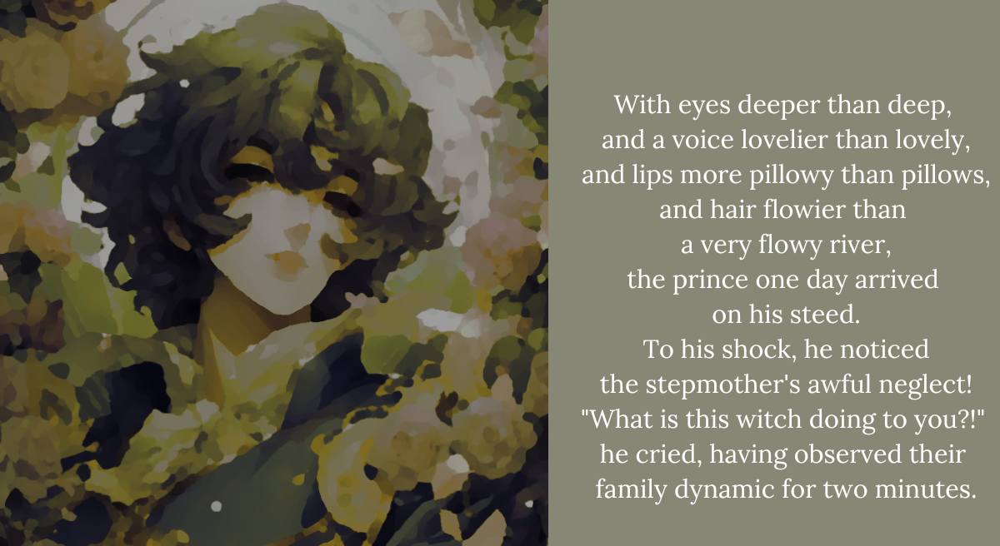

BB1. She meets a prince
“This shall not do!” he cried again.
And he ousted the stepmother from her queendom,
for the prince came from The Empire,
and as we all know, Empires are bigger than Kingdoms.
“The Empire?!” the nobles cried.
“Yes, The Empire!” the crown prince cried.
“Behold my raven hair, which only Empire Royalty has!” he cried again.
“We never noticed! How?!” the nobles cried in response.
“Oh my! Oh my, my my!” Shiori cried. “Who’s gonna cry out next?!”
“Shut up.”
“We thought we knew literature! Ohh, the old masters are quivering! ” Shiori cried. “They’re trembling in their graves, tossing and turning, yelling out in fear, holding back tears! One would say that they’re…”
“Shut up.”
“Crying!”
“I get it okay?! The story sucks. We still have to finish reading it! It’s almost over anyway, because he saved the girl from her stepmom. Now they just have to wrap it up and…”
Some time later...
I don’t know how long I’ve been down here.
I don’t know how many times the prince has called the princess ‘interesting’ with an amused smile. I don’t know how many times they were about to kiss, only for a servant to burst in, or thunder to boom in the background, or for a jealous goddess to intervene and stop their kiss and initiate an entire arc where they have to defeat the jealous goddess. I don’t know when the prince will reclaim his throne and stop whining.
Shiori is passed out next to me, all tuckered out from being a snarky shrew. She’s holding Yorick close and mumbling apologies in her sleep while I try to power through this.
Let’s just hope they…
“I don’t need someone like you in my life!” the disinherited former prince cried harshly.
…Oh no.
ENDING 1 REACHED: The Male Lead Formerly Known as “Prince.”
It seems you’ve reached a winding path that does not end in the cellar. This story doesn’t end here, but for our purposes it does. Wish these two luck, as they learn of the genre of princely romance. Try again?